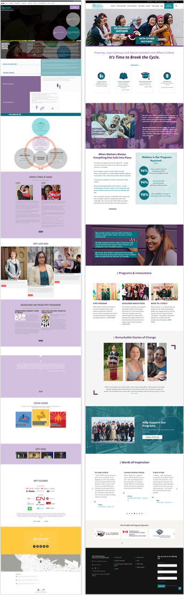
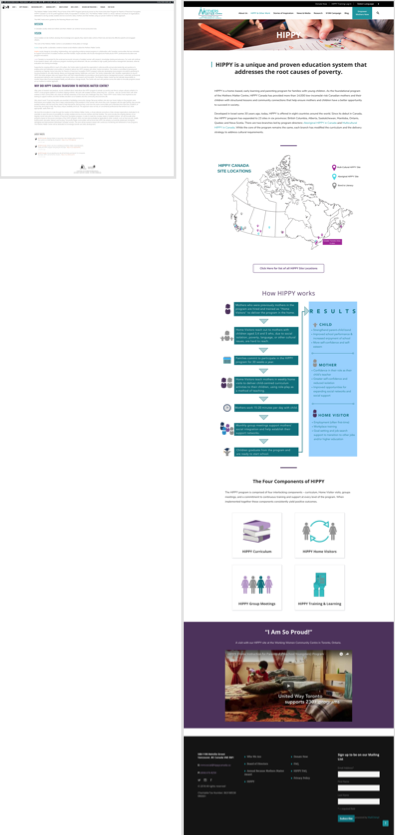
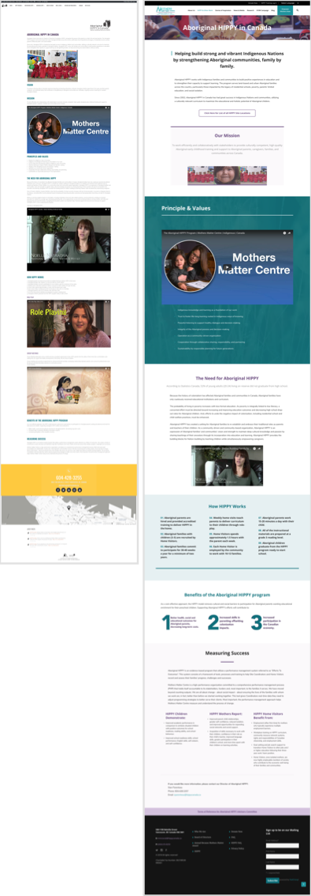
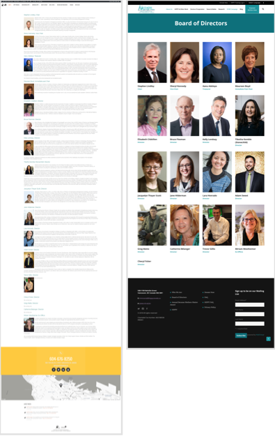
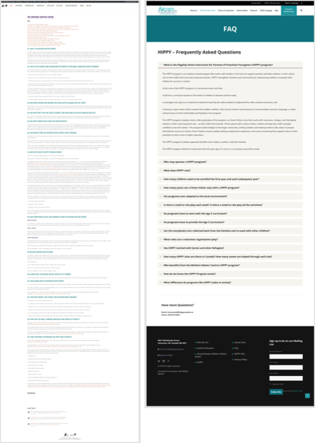
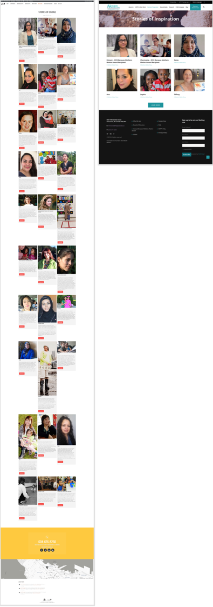
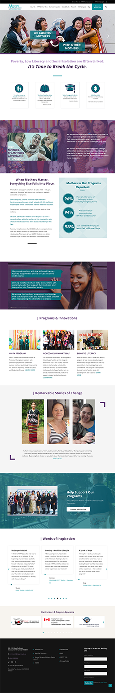

The Mothers Matter Centre empowers isolated mothers by helping them develop the skills and knowledge they need to become more confident parents and engaged citizens in the community.
Tools Used:
Wordpress, Sketch, Illustrator, Photoshop, HTML/CSS
Skills:
Web Design, UX Design, Visual Design, Wireframing
https://www.mothersmattercentre.ca/
My Contribution:
- In less than 2.5 months I completely redesigned and launched the new Mothers Matter Centre Website
- Restructuring the navigation bar for new users
- Integrating MailChimp and and Google Analytics for better traction to the site.
- Integrating and embedding CanadaHelps into the site so that users aren't bounced out of the website.
Problem:
The old Mothers Matter Centre Website was very content heavy, no focus on the MMC mission and did not appeal to look professional.
Solution:
Restructuring the website starting with the header, dividing content to make it more digestable to users while being accessible to all users. Redesign and restructure the website with a new navigation bar, page layouts, have a clear message of its cause, and break down content to be more digestable to the users while being accessible to all.
My Role:
As the sole web designer at the organization, I created the mockups through Sketch and Illustrator, developed and launched the final current site with Wordpress and CSS. The Communications team and I reorganized and restructured the navigation bar of the homepage to better organize the website. I first redesigned each page of the original website through Sketch. After approval, I implemented the design into new website through Wordpress.


In order to make sure the redesign of the website meets the needs of all the departments of the organization, we had a company meeting to get feedback from all the staff of what they believe should be kept or added on to the new site.
Requirements for the new website
- All content on the current site needs to be on the new one.
- Website should load at a fast speed (which requires small photo sizes).
- Website should be responsive.
- The donation page needs to be embedded into the new site and not make the users be directed to the CanadaHelps page.
- UAll photos should be of high-quality. Staff and Board members need a reshoot.

A few navigation bars I was deciding to be the “best fit” for the website. The ones with the red dots were the ones I narrowed down to.
A few sketches of how I would be laying out the site.
Issues with the old website
- Was unclear what the cause for the Mothers Matter Centre was.
- Video on the homepage would not load at times.
- The colours were not following the MMC brand guide.
- With the Board of Directors being the most hit page of the site, it was not visually appealing and some of the images were old.
- Users would tend to get lost or not know how to get to a certain page.
- Donation button not obvious. People tend to not notice it on the homepage.
Old vs Redesign of Main Pages:
Homepage
HIPPY
Aboriginal HIPPY
Board of Directors
FAQ
Stories of Inspiration
Final Main Screens:
Homepage
HIPPY

Aboriginal HIPPY

Board of Directors